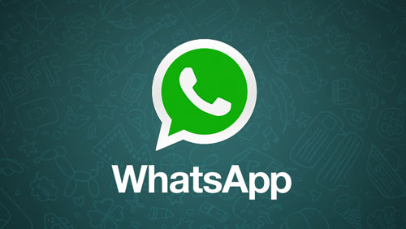

I guess this question must have been pondering to almost every internet users. Housing.com’s Rahul Yadav has been in news for few months and I’ve been following his each update. I was curious to know how come his company worth in Millions,
“ek Website hi to hai, bas isi se itna paisa?”I did a few researches and concluded with the following, let’s start with the websites first:
How Do Websites Make Money?
People make a respectable living simply from websites by writing about topics that interest them. The first thing that comes on the way is the Traffic..Traffic
Traffic is the most important part of any website revenue strategy. Without traffic, your website could have the best content in the world that nobody knows about. Traffic in simple terms refers to the number of visitors a website receives. Now once a have a website is created, how do you generate traffic to your website? Although there are numerous effective methods, the most popular traffic generation methods include: 1. Search Engine Optimization (SEO) SEO refers to optimizing your website for major search engines such as Google, Yahoo. To earn revenue from website, one needs to tailor his website to search engines. This allows readers to find content amidst thousands or even millions of other websites. 2. Social Media Social Media is a powerful tool which allows you to advertise your Website free of cost.
Now Comes Making Money from All This Traffic
Once there is traffic to your website, you can actually begin to make money. Advertising is by far the best way to generate revenue from your website. Some advertising campaigns pay you just for the number of visitors coming to your site while others require that the visitor perform some action (such as make a purchase or click on a link) for you to get paid. Most web services plan to make money by the following:- Google AdSense - As the biggest name in search engines, Google is a great place to start earning money from your website. The AdSense campaign is free to join and places advertisements on your website based on the type of content you provide.For instance, if you own a website about Food, Google AdSense will automatically place ads related to Food. When users click on these links, you are paid. This is known as a pay-per-click or PPC campaign. Although the amount you get paid for each click may only be a few cents, if you have a large amount of traffic coming to your website, these clicks quickly add up to a respectable pay check. Other alternatives of Google AdSense includes: Media.net, Chitika, Clicksor, Bidvertiser, Kontera
- Freemium model – sell a free product and plan to convert some of them to a paid plan.
- Limited period promotion – Start with the free product for a promotional initial period and plan to charge it later. For instance, 37 Signals provides free 30 day trial offer for most products and then charge if you use later. This is a tough thing to master these days.
- Affiliate marketing – Affiliate Marketing refers to referring a product or link on your website and earning a commission, similar to the way some people are earing mobile recharge by referring android applications to other users.
- Selling visitors information -You visited a e-commerce website and then you notice similar or same products which you just saw are seen to you in advertisements over the web. This is the way most ’free’ services make money is not by selling advertising. What they sell is access to you, and information about you to advertisers, marketers and researchers, and others. Your information is the commodity that drives the internet economy. It is collected through your online actions and the information you share.
- Targeted advertising model – Know as much as possible about the user and bring targeted ads. Eg. Facebook and Google.
- Sponsorship model – If your service indirectly helps the government and/or major organizations, you could ask them to sponsor your service.
- Wikipedia model - You could get donations from your users. Many wordpress plugins, open source tools, and Wikipedia do this. This could be the future of newspapers.
- Open Source Model - Sell the product for free and plan to make money on support, customization, and installation. Most open source software follows this model.
- Usage charge model - This is related to the freemium model. Give the product free for low usage, but charge when the user is exceeding the free limits (many storage applications such as Dropbox fall under this).
Now Comes,
How does WhatsApp make money
 Whatsapp founder Jan is an immigrant from Ukraine and faced a common problem what most immigrants face, not being connected with near and dear ones distance apart. Whatsapp was built to solve this very problem. Its customer segment was very clear - Friends, family staying distance apart who have smart phones with internet connection. Let's look at their business model:- Basic Strategy: Whatsapp allows it’s user to enjoy the services for free for first year. However, after that it charges $0.99 for continued service. But till date, I have not heard of a single person who has paid for this service. Interestingly, it tends to extend the free service period every time a user reaches close to the expiry date. However Apple users are charged $0.99 for yearly subscription and download.
- Cost Structure: With mere 32 engineers they are supporting 450mn active users which means approximately 14mn users per engineer, and 99.99% uptime. Thats an outstanding lean operation I must say.
- Investments: Sequoia Capital invested around $8 million in the company, and many other investors are interested in investing in the venture. In India, Reliance Communications has teamed up with WhatsApp for providing a unique scheme for Reliance's prepaid users -- a WhatsApp Plan. So, WhatsApp is making money by tie-ups with popular telecom companies as well.
- Curbing the cost of production WhatsApp employs a handful of engineers (<50) who work in the application development. The rest of the staff is basically for the customer support.
- Limited Budget: WhatsApp saves its money by avoiding any expenses incurred on print, audio visual advertisement for promotion of the application. They have kept tight budgets, and do not spend a penny on advertisements.
- Less maintenance cost on the web-site There's hardly any extra piece of information on the website.Their website is worth only a few dollars. So, there are less maintenance costs as well. This means that they save a lot of running funds.
- Users Information: According to our speculation, the revenue generation for Whatsapp is primarily through database management. Our conversations reflect our interests, likes, dislikes and majorly depicts our preferences. With such extensive information available on Whatsapp backups, the big companies are willing to pay handsome amounts for information extraction.